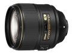

器材库 > 35mm画幅AF定焦镜头 > AF-S 105/1.4E ED

详细规格
镜头类型
中远摄/远摄镜头
发布日期
2016-07-27
焦距
105mm
最大光圈
f/1.4
最小光圈
f/16
视角（对角）
23°10
镜头结构
14片/9组
低/超低色散镜片
3片
光圈叶片
9片
最近对焦距离
100cm
驱动马达
SWM（宁静波动马达）
滤镜口径
82mm
镜头卡口
Nikon F
防抖
否
颜色
黑色
尺寸
94.5×106mm
重量
985g
附件
82mm搭扣式镜头前盖LC-82，镜头后盖LF-4，卡口式遮光罩HB-79，镜头袋CL-1218
备注
纳米结晶涂层，氟涂层
秋月半弯2017-11-02 00:144.58 分
操作性 4.50耐用性 4.00性价比 4.50解像力 5.00色彩还原 5.00机械结构 4.50
hopefun2017-03-08 03:454.5 分
操作性 4.50耐用性 4.50性价比 4.50解像力 4.50色彩还原 4.50机械结构 4.50
cybertron2016-09-10 13:584.67 分
操作性 4.50耐用性 4.50性价比 4.50解像力 5.00色彩还原 5.00机械结构 4.50
产品图 / 样片
AF-S 105/1.4E ED
评测 / 相关文章
- 详细内容 （存档）
- 迷你空气切割机 尼康AF-S105/1.4E ED评测 （存档）
- ［资讯］Imaging Resource公布年度镜头获奖结果 （存档）
- ［试用］尼康AF-S 105/1.4E实拍样张 （存档）
- ［试用］lensrentals：105/1.4为尼康最好的镜头 （存档）
- ［试用］人像神器 尼康105/1.4E VS 85/1.4G测试 （存档）
- ［试用］尝鲜人像神器 尼康AF-S105/1.4E ED试用 （存档）
- ［试用］到底怎么样 尼康105/1.4网友抢先试 （存档）
- ［资讯］尼康AF-S 105/1.4与各家85、135大比拼 （存档）
- ［行情］尼康105/1.4国内开始预订 （存档）
- ［资讯］尼康105/1.4E ED实物亮相 实拍样张流出 （存档）
相关文章
- ［试用］考拉的尼康105/1.4E自留地 （原站已下线）
- ［行情］尼康105/1.4E最新低价 （原站已下线）
- ［资讯］尼康AF-S 105/1.4E开发访谈 （原站已下线）
- ［资讯］Imaging Resource公布年度镜头获奖结果 （存档）
- ［试用］迷你空气切割机 尼康AF-S105/1.4E ED评测 （存档）
- ［试用］尼康AF-S 105/1.4E实拍样张 （存档）
- ［试用］lensrentals：105/1.4为尼康最好的镜头 （存档）
- ［试用］人像神器 尼康105/1.4E VS 85/1.4G测试 （存档）
- ［试用］尝鲜人像神器 尼康AF-S105/1.4E ED试用 （存档）
- ［试用］到底怎么样 尼康105/1.4网友抢先试 （存档）
- ［资讯］尼康AF-S 105/1.4与各家85、135大比拼 （存档）
- ［行情］尼康105/1.4国内开始预订 （存档）
- ［资讯］尼康105/1.4E ED实物亮相 实拍样张流出 （存档）
- ［资讯］尼康105/1.4虚化有多强 表格测算告诉你 （原站已下线）
- ［资讯］尼康105/1.4E镜头清渣去灰记 （原站已下线）
- ［影像］拍娃利器 尼康105/1.4大显身手 （原站已下线）